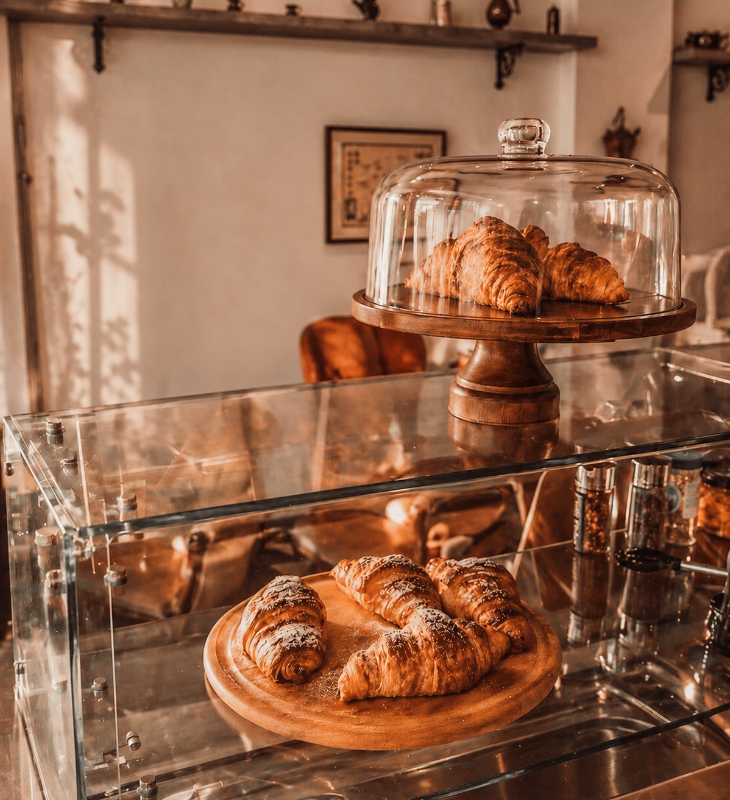
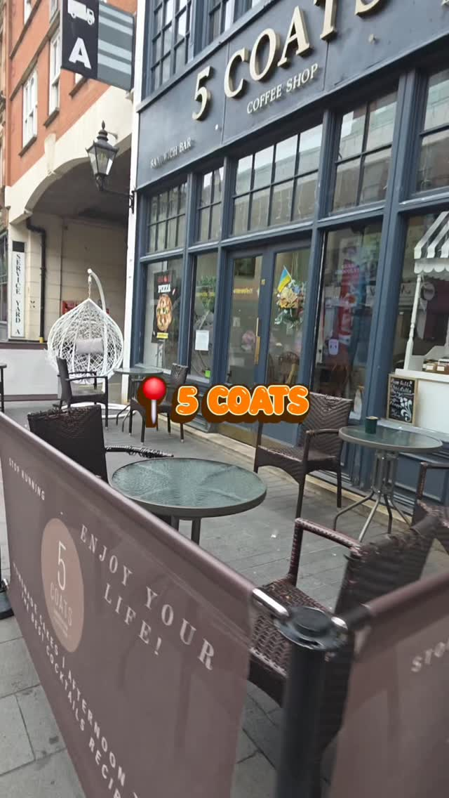

Ham & cheese panini
For a warm lunch.

coffee shop
& sandwich bar
19 High Street · Leicester Coffee
Coffee, a bite to eat.
A little time for you.
Illustrative setting and objects · ask about today’s menu.
Your usual. At your own pace.

19 High Street · Leicester
Coffee, a bite to eat and homemade Ukrainian cakes in the heart of the city.
Explore the menuFind us on High StreetFor the first coffee.
For a lunch break.
For “just one slice”.
A place to pause on High Street, with something savoury, something sweet and a drink to settle in with.
Make your way hereFor the visit you have in mind
Save a little list on this page as you browse. It’s a talking point when you visit.
Local preview. This is not an order or reservation. Nothing is sent or saved after you leave.
Come by High Street
Check Instagram for café updates and ask about current opening hours before travelling.
Visit our Instagram ↗
Cake-counter news and café updates.